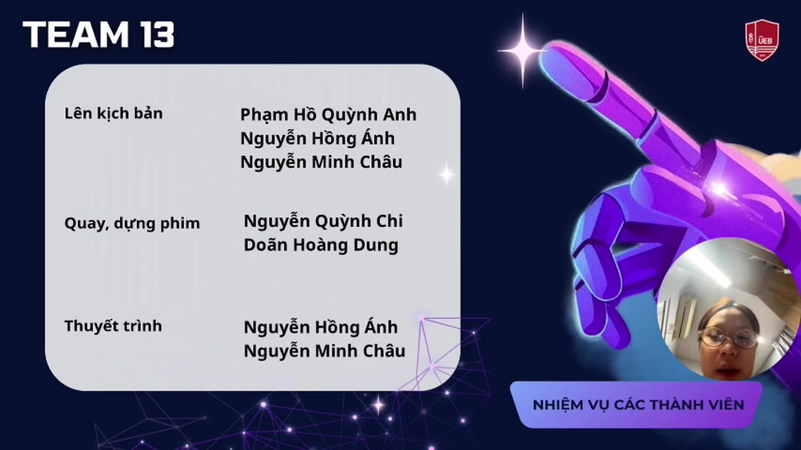

Bài tập chính được dựng thành sáu hồ sơ số riêng.
21.0285° N105.8542° EUEB · VNU
Nguyễn Quỳnh Chi · MSV 25050870
Kinh tế quốc tế,được đọc bằng dữ liệu và công nghệ.
Tôi là sinh viên Kinh tế quốc tế tại Trường Đại học Kinh tế – ĐHQGHN. Portfolio này kết nối tư duy kinh tế toàn cầu với kỹ năng tìm nguồn, cộng tác số và sử dụng AI có trách nhiệm.
Học phầnVNU1001_E252046Nhập môn Công nghệ số & AI
FIELD 01Global Trade
FIELD 02Digital Intelligence
QCPORTFOLIO INDEX
Bài giữa kỳ dạng video, có trang bonus và bản 720p.
Trục năng lực: dữ liệu, công cụ, hợp tác và AI.
Selected field notes
Ba dự án giao nhau trực tiếp với Kinh tế quốc tế.
Thay vì tuân theo một khuôn mẫu nhất định, mỗi dự án tại đây đều được thiết kế dựa trên đặc thù nội dung riêng biệt - từ nghiên cứu CBAM, tiêu dùng xanh, cho đến ứng dụng AI trong thương mại điện tử.
CBAMEU · VIET NAM
RESEARCH NOTE 02
CREATIVE LAB 05Tìm kiếm và đánh giá nguồn học thuật về CBAM
Đánh giá mười nguồn theo tác giả, phương pháp, độ cập nhật và độ tin cậy để đọc tác động tới chuỗi cung ứng xuất khẩu Việt Nam.
Mở hồ sơ nghiên cứu ↗Xu hướng tiêu dùng xanh của thế hệ trẻ
Phối hợp ChatGPT, Firefly và Gemini trong một quy trình có biên tập.
ETHICS FILE 06“AI hỗ trợ tốc độ. Người học chịu trách nhiệm về lập luận.”Đọc bộ nguyên tắc ↗
Midterm transmission · Bonus 07
Ứng dụng AI trong học ngoại ngữ và giáo dục.
Sản phẩm giữa kỳ của Team 13. Nguyễn Quỳnh Chi phụ trách quay và dựng phim cùng Doãn Hoàng Dung. Video được giữ nguyên nội dung, nâng lên 720p và tăng nét nhẹ.
- Thời lượng
- 07:57
- Vai trò
- Quay · Dựng phim
- Định dạng
- MP4 · 720p

07 / 07
Học công nghệ không tách khỏi ngành học. Giá trị nằm ở cách biến công cụ thành năng lực phân tích và ra quyết định.Góc nhìn xuyên suốt của portfolio